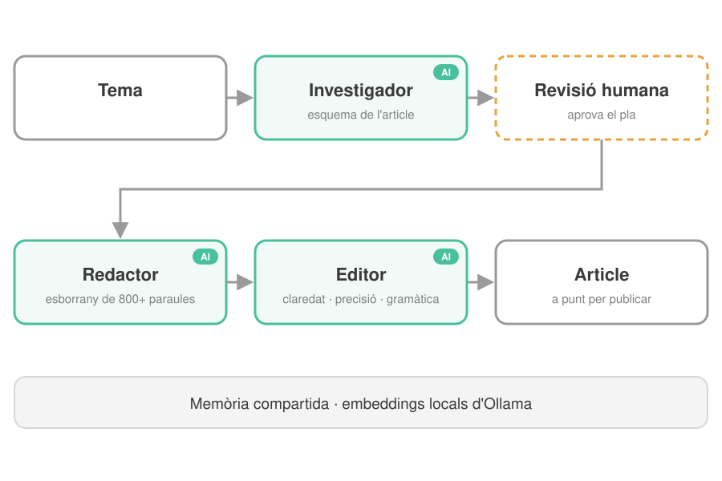
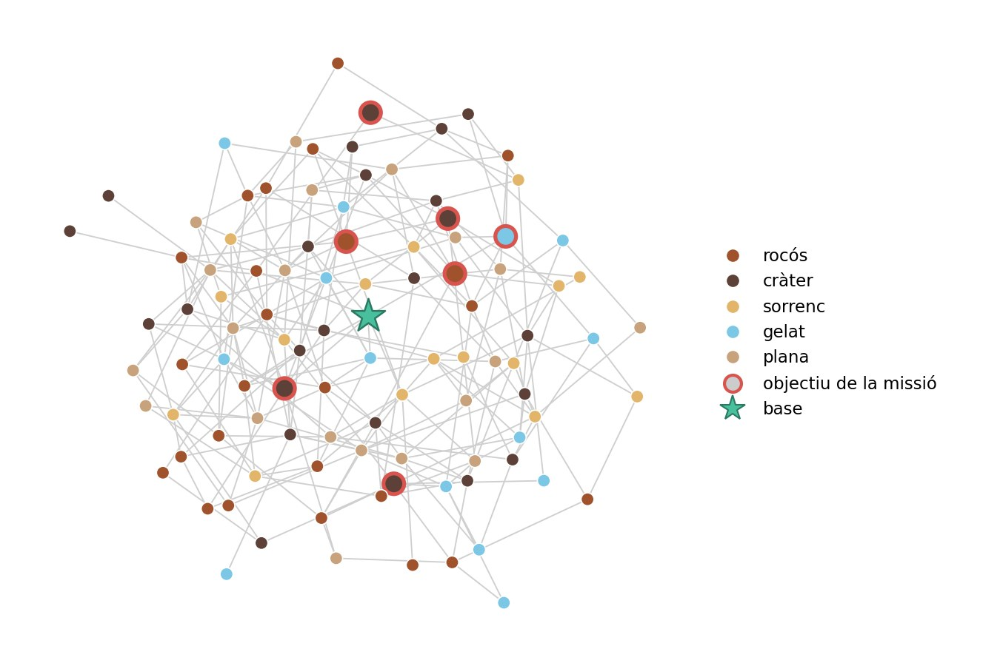
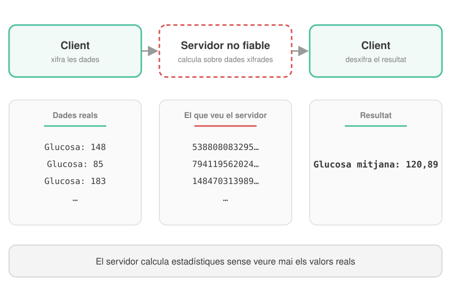

Consultoria tècnica i estratègica en IA
Avaluació dels teus processos de negoci actuals, identificació d'oportunitats d'automatització i disseny de l'arquitectura d'estratègies basades en IA.
Tarifa: 30 € / hora
Amb una formació en Matemàtica Aplicada i Informàtica (Universitat Estatal de Sant Petersburg) i un màster recent amb honors en Enginyeria d'Intel·ligència Artificial i Ciberseguretat per la Universitat Rovira i Virgili (Tarragona), aporto unes sòlides competències tècniques. La meva experiència inclou LLM, Python, PyTorch, TensorFlow, LangChain, RAG i sistemes multiagent com CrewAI.
El que em diferencia són els meus 10 anys d'experiència prèvia en gestió i operacions als sectors del comerç minorista B2B i B2C i de les assegurances. Entenc a fons els processos de negoci i l'anàlisi de dades, cosa que em permet implementar la IA no per la tecnologia en si, sinó per resoldre problemes reals de negoci. Després de completar amb èxit unes pràctiques implementant Visió per Computador en una línia de fabricació d'IPTE Spain (Reus), estic plenament preparada per dissenyar, construir i desplegar sistemes d'automatització intel·ligent des de zero.
Ofereixo serveis B2B de consultoria i implementació 100 % en remot, orientats a optimitzar i automatitzar els fluxos de treball de la teva empresa amb tecnologies d'IA d'avantguarda.
Avaluació dels teus processos de negoci actuals, identificació d'oportunitats d'automatització i disseny de l'arquitectura d'estratègies basades en IA.
Tarifa: 30 € / hora

Integració de grans models de llenguatge (LLM), generació augmentada per recuperació (RAG) i sistemes multiagent en els teus fluxos de treball actuals per automatitzar textos, dades i comunicacions.
Projectes clau en mà: 50 € – 1.500 €

Entrenament i desplegament de cicle complet de models de Visió per Computador per a fabricació, control de qualitat, detecció d'objectes i extracció de dades visuals.
Projectes clau en mà: 100 € – 2.000 €
Una selecció de projectes que he desenvolupat: des d'un desplegament en una línia de producció fins a sistemes multiagent amb LLM. Fes clic en una imatge per veure'n més.
 4
4
Pipeline de deep learning en dues etapes desenvolupat per a IPTE Spain (Reus): un detector RT-DETR localitza cada soldadura i una U-Net la segmenta píxel a píxel, i genera un mapa de calor fàcil d'interpretar per a l'operari. Assoleix un coeficient Dice de 0,92 en temps real i, gràcies a un flux amb validació humana (human-in-the-loop), s'adapta a un nou tipus de soldadura amb unes 50 imatges etiquetades.
 3
3
Sistema de visió per computador clàssica que compta les peces completes d'una línia de termosegellat a partir d'imatges d'una càmera termogràfica. L'aplanament del fons, la detecció de línies i cercles amb la transformada de Hough i el filtratge per vores conserven només les peces totalment visibles; els paràmetres es van ajustar automàticament i el recompte va ser correcte en les 7 imatges de mostra.

Un equip de tres agents LLM (investigador, redactor i editor) converteix un tema en un article a punt per publicar. L'investigador prepara un esquema que aprova una persona, el redactor escriu un esborrany de més de 800 paraules i l'editor en revisa la claredat, la precisió i la gramàtica. La memòria compartida funciona amb embeddings locals d'Ollama.
 3
3
Model de deep learning que detecta esquerdes píxel a píxel en fotos de formigó i asfalt, per a la inspecció automatitzada d'edificis i infraestructures. Es basa en l'arquitectura DeepCrack (una xarxa VGG-16 amb sortides laterals a diverses escales), entrenada amb PyTorch amb 300 imatges anotades; en 237 imatges de prova noves assoleix un F1 de 0,71, tot i que les esquerdes només fan uns quants píxels d'amplada.

2Arquitectura d'un sistema CrewAI que planifica una missió d'exploració a Mart amb rovers, drons i satèl·lits. Sis equips d'agents especialitzats es reparteixen la feina: un prepara les dades de la missió, quatre planifiquen les rutes de cada tipus de vehicle i un altre ho integra tot en un únic pla que respecta les restriccions d'energia, temps i terreny. Dissenyat en un equip de cinc persones.

2Aplicació web que permet a un servidor no fiable calcular estadístiques sobre dades sensibles sense desxifrar-les mai. Implementa en Python l'homomorfisme de privadesa de Domingo-Ferrer (claus de 200 dígits, xifratge probabilístic) i calcula mitjanes, covariància i una regressió sobre un conjunt de dades mèdiques xifrat; només el propietari de les dades en pot llegir els resultats. Desenvolupat en un equip de tres persones.
Disponible per a nous projectes i contractes B2B. Tant si busques assessorament estratègic per adoptar la IA com si necessites un desenvolupament pràctic per a una tasca concreta d'automatització o de visió per computador, estic preparada per ajudar el teu negoci a créixer de manera eficient.